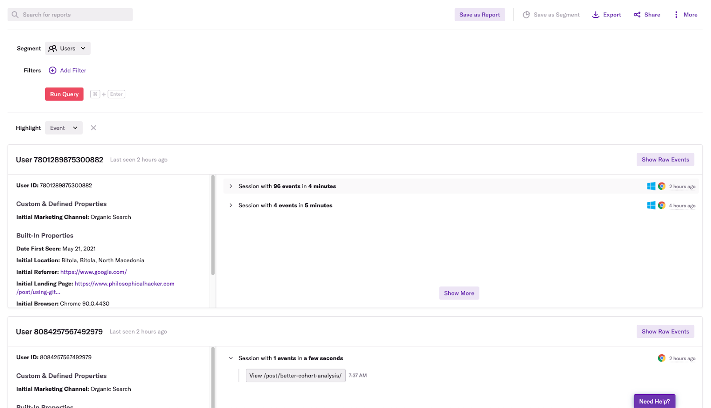
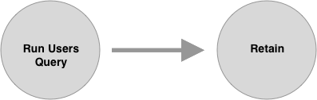
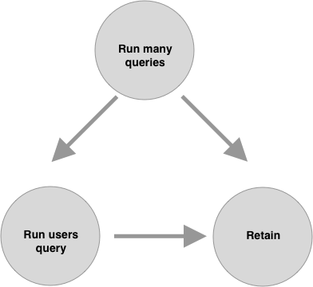
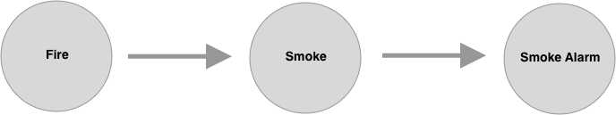
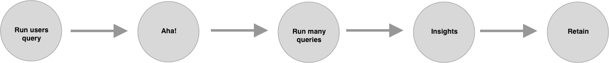

Note: This post was originally published on heap’s blog
We all know that correlation isn’t causation, but when we’re assessing the impact of a feature we’ve just shipped or searching for an “aha moment” that leads to better retention, it’s easy to forget this. It’s tempting to look at the increased conversion rates of users who did X versus users who didn’t, and conclude that our feature is working or that we’ve found the “aha moment.”
A/B testing is the obvious way to avoid making this mistake, but it isn’t a silver bullet. Fortunately, causal models and the “backdoor criterion” provide us with another way to estimate the causal impact of feature usage on conversion, retention, etc. These tools can help us prioritize things that we can A/B test and can help us estimate the causal impact in cases where we can’t.
This post introduces these tools with an example of how we recently used them in a Heap retention analysis.
What makes our users more likely to stick around?
It all began when our product team asked us to find the behaviors that make users more likely to stick with Heap for the long run. To start our analysis, we did a lasso regression, in which the input variables were the logs of the number of times an event occurred over a four-week period and the outcome variable was whether an account retained after four months. We found that the accounts that run a Heap query in the users view (a users query) are more likely to stick around. A users query shows a list of users and their session activity:

Although accounts that ran queries in the users view tended to have higher retention, we knew that correlation isn’t causation. We also knew that because the users view is one of the last query modules listed in Heap, it’s a good bet that accounts that run queries in this view are more likely to run lots of queries.
This means that the number of queries run is a confounding variable. We wanted to know the causal relationship between running a users query and retention, but because the number of queries run may have a causal relationship with running users queries, we couldn’t isolate the causal impact of the users queries themselves on retention.
Why we didn’t just run an A/B test
At this point, many teams would reach for an A/B testing tool to isolate the causal impact of running a users query on retention. In our case, this wasn’t an ideal option for a few reasons.
First, it takes time to implement and collect enough data to get a result, especially if the change you’re testing has a small impact, and if you’re building a SaaS product like ours (one with fewer users compared to a consumer-facing product). For example, suppose you’re A/B testing a change on a funnel that has a 20% conversion rate, and you’re trying to detect a change that will increase your conversion rate by two percentage points. In that case, you’d need 5,300 users in each group, assuming you wanted a 95% confidence interval. Again, for B2B SaaS products that typically have a smaller number of users, it can take far too long to get samples that large.
Second, while A/B tests are “the gold standard” for assessing the causal impact of a product change, they aren’t trivial to perform. They take engineering and product resources to conduct and manage. We knew that we could avoid potentially wasting resources if we were able to conduct a rudimentary causal analysis without an A/B test. Here’s how we did it.
How we controlled for confounders without an A/B test
One fairly simple way of controlling for a confounding variable is to filter your data to look at only one value for it. In our case, to control for the number of queries run, we looked at all the accounts that ran only four queries. Once we did this, we saw that executing a query in the users view was still associated with higher retention. Now we could be sure that accounts that run users queries result in higher retention — not just because those accounts also happen to execute many queries. Doing something like this in Heap is simple enough: you can just apply a filter to your query.
Although this approach is simple, filtering your data in this way often introduces statistical noise. Remember from your stats class: the estimate of a population parameter becomes less precise as we decrease the sample size. For example, while a five percentage-point difference in conversion is significant if we’re looking at two groups of a thousand users, it’s nowhere near significant if we only look at two groups of 100 users.
A more robust — albeit more time-consuming — approach involves fitting a model to your data that includes the covariate you want to control for. This may sound prohibitively difficult, but a programmer familiar with just a tiny bit of statistics can pull this off. First, you can wrangle your event data into the right shape with a few lines of SQL (or pandas or dplyr):
WITH jan_active_users AS (
SELECT DISTINCT user_id FROM "events"
WHERE time BETWEEN '2021-01-01' AND '2021-01-31'
),
may_active_users AS (
SELECT DISTINCT user_id FROM "events"
WHERE time BETWEEN '2021-05-01' AND '2021-05-31'
),
users_with_retention AS (
SELECT jan_active_users.user_id, may_active_users.user_id IS NOT NULL as retained FROM
jan_active_users
LEFT JOIN
may_active_users ON jan_active_users.user_id = may_active_users.user_id
)
SELECT user_id, target_text, retained, ln(count_if(event_name = 'Run Query')), ln(count_if(event_name = 'Run Users Query'))
FROM "events"
JOIN users_with_retention USING (user_id)
WHERE event_name = 'Run Query' OR event_name = 'Run Users Query'
GROUP BY user_id, retained;
You’ll wind up with a row for each user that shows how many times they did the two events and whether they retained:
| USER_ID | RETAINED | COUNT_RUN_QUERY | COUNT_RUN_USERS_QUERY |
|---|---|---|---|
| 5812187676758056 | FALSE | 6.92 | 1.23 |
| 6586109138291569 | FALSE | 5.24 | 4.35 |
| 2821019748114331 | FALSE | 6.91 | 6.98 |
| 403886255710907 | FALSE | 7.33 | 1.57 |
| 2387662729980491 | TRUE | 6.76 | 8.12 |
| 6399409445303540 | TRUE | 5.09 | 3.16 |
| 3301938556792545 | FALSE | 3.09 | 4.11 |
| 6107064515647820 | FALSE | 7.31 | 5.11 |
| 3837932741085309 | FALSE | 8.93 | 3.01 |
| 7443503301877038 | FALSE | 7.55 | 9.01 |
Then, you can fit a model to your data in R or python with just a few lines of code:
retention <- glm(retained ~ count_run_query + count_run_users_query, data = mydata, family = "binomial")
summary(retention)
If the confidence interval for the coefficient of the variable you suspect contributes to retention, or conversion doesn’t overlap with 0, then it’s reasonable to conclude that there may be some causal impact in spite of the confounder.
I emphasize “may” because there’s always a chance that there’s another confounder we forgot to include in our model. There’s also a chance that we’ve controlled for too many variables with our model. We worried about both of these issues as we conducted our analysis, but causal models and the backdoor criterion helped put us at ease.
How we identified confounders with causal models and the backdoor criterion
A causal model — as the name suggests — is a model that shows what causes what in a system. This type of model is typically represented as a graph, where the nodes are variables and the directed edges are causal relationships. A simple causal model representing the retention hypothesis from our guiding example would look like this:

Making our causal hypotheses explicit via a causal diagram makes it easier for collaborators to point out potentially missing confounders in our analysis. Upon seeing the above diagram, you can imagine a teammate protesting: “Wait a minute. It seems plausible that running many queries causes both running users queries and retention.”
We can then revise our causal model with this point in mind:

Of course, explicitly representing our hypotheses in a causal model isn’t a foolproof way to ensure we’ve considered all possible confounders, but it’s helpful in that it captures those hypotheses in an approachable way that others can more easily engage with.
Causal diagrams also help us determine whether something is a confounder that needs to be controlled for. This is no small feat. Even statisticians are occasionally confused about what to control for in an analysis, and instead of thinking carefully about their hypothesis, they just try to control for as much as they can.1
The “backdoor criterion” tells us specifically how to identify a confounder in a causal diagram. According to this criterion, any path to the response variable that runs through the explanatory variable will confound the analysis, and you can fix this issue by controlling for variables along this “backdoor” path.
For example, in the above diagram, we’re interested in the relationship between Run users query and Retain. However, the path that starts from Run many queries reaches Retain via a “backdoor” through Run users query, so according to the backdoor criterion, Run many queries is a confounder.
Importantly, if a variable does not satisfy the backdoor criterion, it is not a confounder and shouldn’t be controlled for. Controlling for variables that aren’t confounders can actually lead us to falsely believe that the explanatory variable has no causal effect.
For example, a mediator variable sits between the explanatory and response variables. Fire causes smoke, and smoke sets off the smoke alarm:

Here, smoke is a mediator, and if we control for it, we’ll falsely conclude that fire doesn’t trigger smoke alarms.2
These examples may seem trivial, but causal diagrams and the backdoor criterion helped clarify when we needed to control for the number of queries run in assessing the impact of running a users query on retention. Using them helped us identify that there are two easily conflatable hypotheses about why the users query may cause retention, and that whether we should control for the number of queries depends on which hypothesis we’re testing.
In one hypothesis, the users query is an “aha moment,” and the number of queries run is a mediator variable that we shouldn’t control for. In a second hypothesis, users queries are more likely to lead to insights, and the number of queries run is a confounding that should be controlled for.
We’ve already seen how the backdoor criterion clarified what to control for in the second hypothesis:
Again, here we’re interested in whether queries run in the users view are more likely to lead to retention independently of the number of queries run in an account. In other words, we’re interested in answering a question like: If you can only get users to execute 10 queries in their first month using Heap, should a query in the users view be one of them?
The second hypothesis on why users queries may cause better retention is that running a users query is an “aha moment” because it’s key to helping users understand how they can get insights from running queries. We can represent this hypothesis with the following diagram:

In this hypothesis, the number of queries run is a mediator and controlling for it will block the causal impact of running a users query — just like controlling for smoke will block fire’s causal impact on triggering a smoke detector. When we looked at the numbers here, we found support for this “aha moment” hypothesis: running a users query has a causal impact on retaining the account because it causes users to run more queries.
While conducting our retention analysis, the team had different opinions at different times about whether the number of queries run was a confounding variable. We couldn’t quite get clear on the question until we slowed down, created some causal diagrams representing our hypotheses, and applied the backdoor criterion.